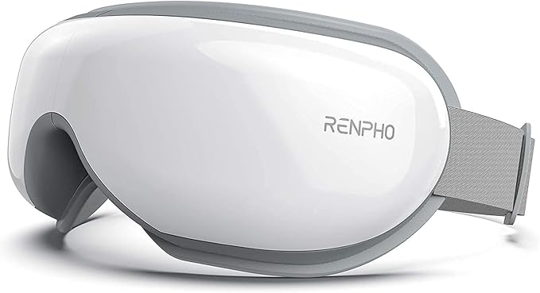
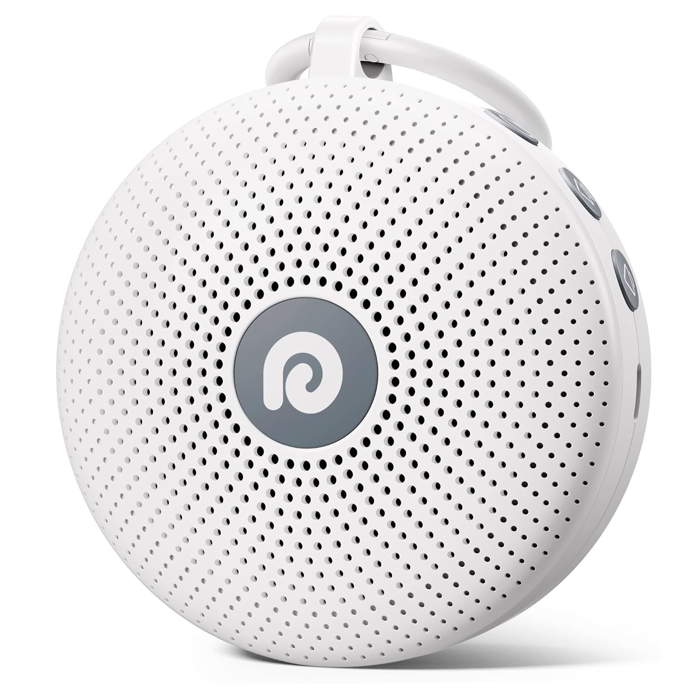
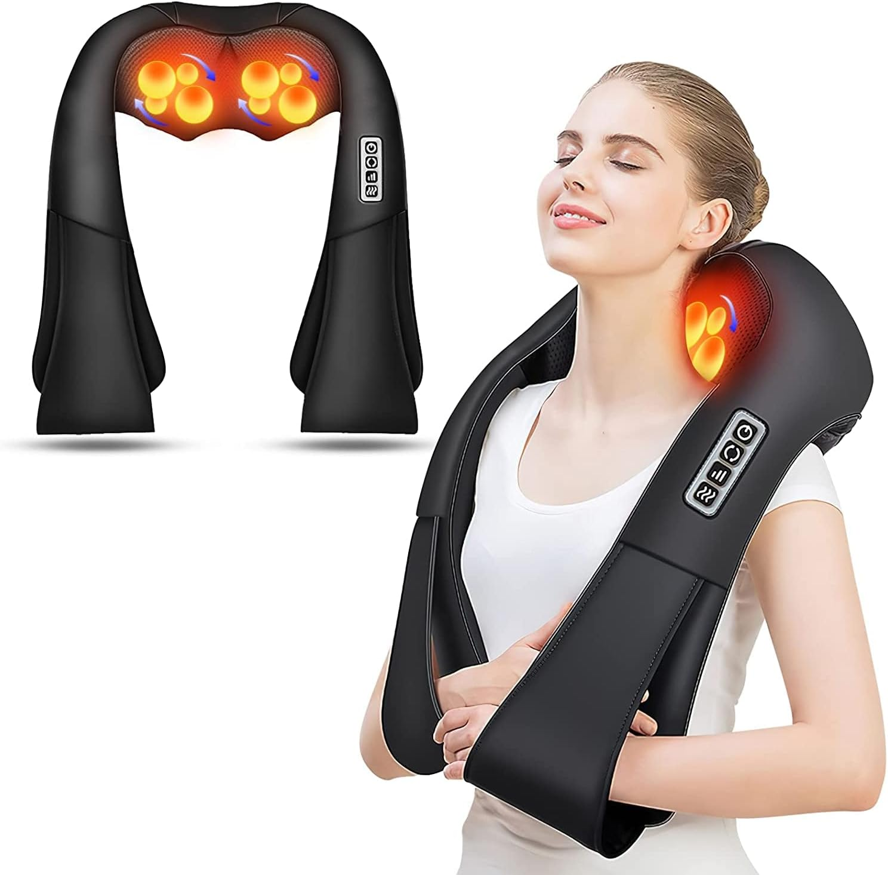
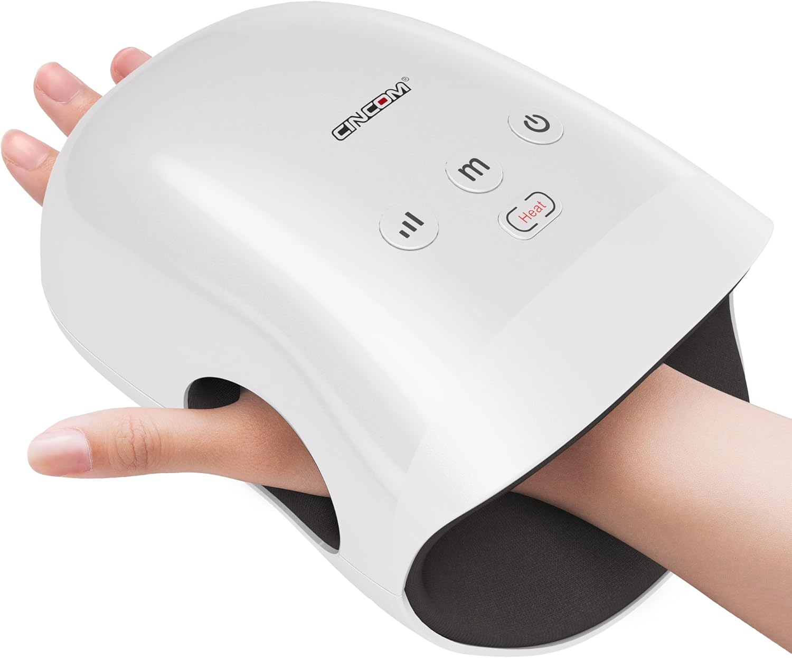
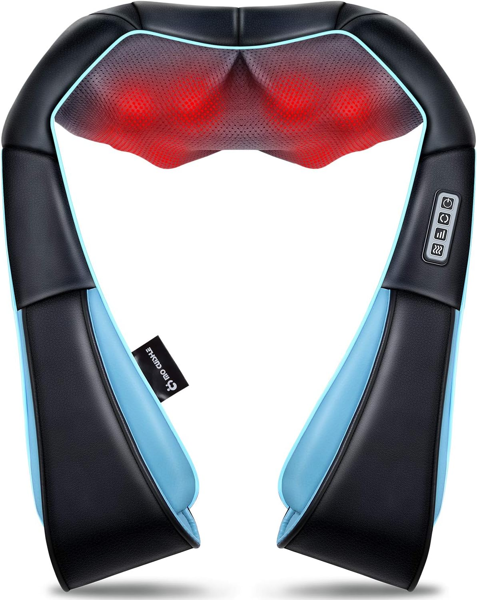
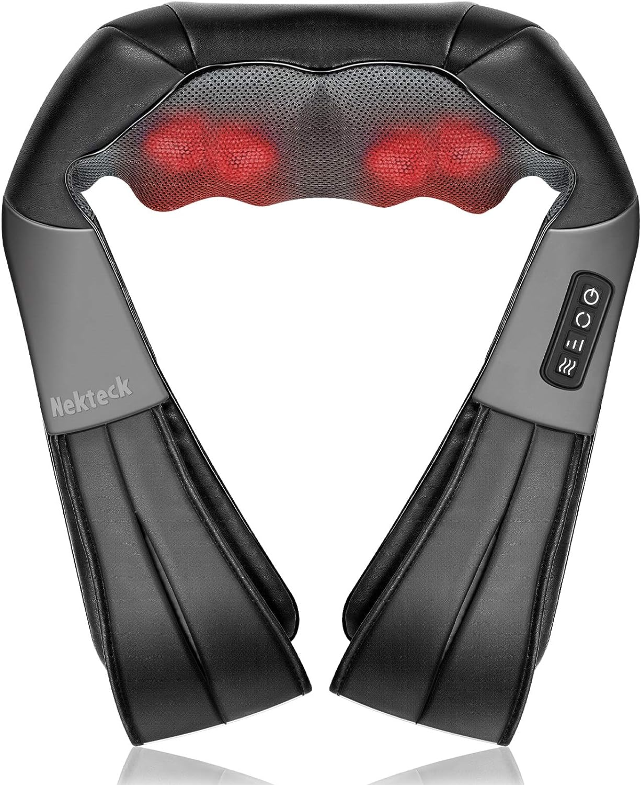

In today's fast-paced world, finding effective ways to relax and recover is essential. We've sifted through thousands of customer reviews to bring you six highly-rated relaxation and recovery gadgets on Amazon that offer exceptional value. These massagers, sound machines, and comfort aids have been embraced by users for their ability to soothe tired muscles, improve sleep, and promote overall well-being without a hefty price tag.
1. RENPHO Eyeris 1 Eye Massager with Heat
★★★★☆ (4.4/5 from 27,972 reviews)
The RENPHO Eyeris 1 Eye Massager is designed to provide soothing relief for tired eyes. Combining gentle heat, air compression, and rhythmic massaging, it helps alleviate eye strain, reduce puffiness, and can even aid in relieving headaches. It's a perfect companion for those who spend long hours in front of screens or struggle with sleep. The heat function typically warms up to a comfortable 104-107°F (40-42°C), which helps to improve blood circulation around the eyes, potentially reducing dark circles and soothing dry eyes.
This smart eye mask often features multiple massage modes, such as a sleep mode that uses gentle pressure, a refresh mode with more invigorating massage, or a general relaxation mode. The air compression targets acupressure points around the eyes and temples, while the built-in speakers can play calming music via Bluetooth, further enhancing the relaxation experience. The adjustable strap ensures a snug and comfortable fit for various head sizes, making it a truly personal relaxation device.
Users praise its comfortable fit and the variety of massage modes that cater to different relaxation needs. Being FSA/HSA eligible makes it an accessible option for many seeking therapeutic eye care at home. Many reviewers note a significant reduction in eye fatigue and an improvement in sleep quality after incorporating this massager into their nightly routine.
Check reviews for RENPHO Eyeris 1 Eye Massager on Amazon
2. Dreamegg White Noise Machine
★★★★½ (4.6/5 from 8,337 reviews)
The Dreamegg White Noise Machine offers a selection of 21 soothing sounds, including white noise, fan sounds, and nature sounds (like rain, ocean waves, crickets, or lullabies), to create a tranquil environment. Its portable design and powerful battery make it ideal for improving sleep quality at home, masking distractions in the office, or providing comfort during travel. The core idea is to provide a consistent auditory backdrop that helps to drown out sudden, jarring noises that can disrupt sleep or concentration.
Beyond just sleep, this device is a versatile tool for creating a focused work environment or a calming atmosphere for meditation or study. It often includes features like an auto-off timer (e.g., 30, 60, or 90 minutes) and memory function that recalls your last settings for sound, volume, and timer. The sound quality is typically clear and rich, avoiding the tinny or artificial sound found in some lower-quality machines. Its compact size and long battery life make it an excellent travel companion for light sleepers or families with young children.
This sound machine is popular among adults, children, and babies alike for its effectiveness in promoting relaxation and deeper sleep. Its noise-canceling properties are particularly valued in busy households or noisy urban settings. Many parents find it indispensable for helping their infants and toddlers fall asleep and stay asleep longer.
Check reviews for Dreamegg White Noise Machine on Amazon
3. AERLANG Shiatsu Back and Neck Massager
★★★★☆ (4.3/5 from 2,969 reviews)
The AERLANG Shiatsu Back and Neck Massager provides a deep tissue kneading massage experience, enhanced by a soothing heat function. This electric massage pillow is designed to target tension in the neck, shoulders, and back, offering relief from muscle soreness and stiffness. The shiatsu nodes typically rotate in multiple directions, mimicking the finger pressure of a professional massage therapist to work out knots and relieve tension effectively.
The integrated heat therapy further enhances the massage by warming muscles, which helps to increase blood flow and promote deeper relaxation. Many users find this combination particularly effective for chronic pain or stiffness resulting from poor posture or long hours at a desk. The pillow design often includes adjustable straps, allowing it to be secured to an office chair, car seat (with an appropriate adapter), or sofa, ensuring targeted relief wherever needed. Controls are usually simple, allowing users to easily switch heat on/off or change massage direction.
While not cordless, its powerful performance and ergonomic design make it a favorite for those seeking effective, targeted massage therapy at home. It's often highlighted as a thoughtful gift for loved ones needing relaxation, especially those who suffer from persistent neck and shoulder pain.
Check reviews for AERLANG Shiatsu Back and Neck Massager on Amazon
4. CINCOM Hand Massager
★★★★☆ (4.2/5 from 10,722 reviews)
The CINCOM Hand Massager is a cordless device that uses air compression and heat therapy to soothe tired hands and alleviate symptoms associated with arthritis and carpal tunnel syndrome. Its portability allows for relaxation anytime, anywhere. The air compression works by inflating and deflating airbags in sequence, applying pressure to various points on the hand, wrist, and fingers, which can help to improve circulation and reduce swelling.
This massager typically offers multiple massage modes and intensity levels, allowing users to customize their experience from a gentle, relaxing massage to a more intense, therapeutic session. The heat function provides gentle warmth to further relax muscles and ease joint stiffness. Being cordless and rechargeable, it's convenient to use while watching TV, reading, or working at a desk. Many users who type frequently or engage in manual labor find it particularly beneficial for relieving hand fatigue and pain.
Users appreciate the customizable intensity levels and the targeted relief it provides for aching joints and muscles in the hands and wrists. Its eligibility for FSA or HSA funds adds to its appeal, making professional-level hand therapy more accessible.
Check reviews for CINCOM Hand Massager on Amazon
5. Mo Cuishle Shiatsu Back Shoulder and Neck Massager
★★★★☆ (4.4/5 from 26,431 reviews)
The Mo Cuishle Shiatsu Massager offers an immersive 4D deep tissue kneading massage combined with heat. It's designed to effectively target muscle knots and tension in the back, shoulders, and neck, mimicking the hands of a professional masseuse. The "4D" aspect often refers to massage nodes that can move up and down, side to side, and sometimes vary in depth or intensity, providing a more comprehensive and human-like massage experience.
This type of massager usually comes with arm loops or handles, allowing the user to adjust the position and apply more or less pressure to the targeted area for a customized massage intensity. The heat function complements the deep kneading action by relaxing muscles and enhancing blood flow, which can speed up recovery and provide greater pain relief. It's often praised for its ability to tackle stubborn knots in the shoulder blades and upper back area, common stress points for many individuals.
Its robust performance and ergonomic design make it a popular choice for those seeking significant relief from chronic pain or everyday stress. It's frequently recommended as a high-value gift due to its effectiveness and versatility in addressing common aches and pains.
Check reviews for Mo Cuishle Shiatsu Massager on Amazon
6. Nekteck Shiatsu Neck and Back Massager
★★★★☆ (4.3/5 from 63,779 reviews)
The Nekteck Shiatsu Neck and Back Massager is a versatile electric massage pillow featuring 3D deep tissue kneading nodes and soothing heat. It's designed for use on various body parts, including shoulders, legs, and back, making it suitable for home, office, or even car use with an adapter. The "3D" nodes are engineered to automatically change direction during each massage session, providing a more varied and thorough massage.
This massager often includes features like multiple speed settings, allowing users to choose between a gentler or more intense massage. The ergonomic U-shape design is particularly effective for draping over the shoulders to target the neck and upper back, but it can also be effectively used on the lower back, calves, thighs, and feet. The inclusion of a car adapter significantly enhances its portability and usefulness for those who spend a lot of time driving or want relief during road trips.
With a high number of reviews, this massager is praised for its powerful relief and adaptability, offering a convenient way to address muscle pain and promote relaxation wherever you are. Its durability and consistent performance make it a trusted choice for long-term use.
Check reviews for Nekteck Shiatsu Neck and Back Massager on Amazon
Why These Products Stand Out
These six gadgets have earned their spot as top recommendations for their ability to deliver effective relaxation and recovery at an accessible price point. Each product, from targeted eye and hand massagers to versatile shiatsu pillows and calming sound machines, has been validated by thousands of users for its positive impact on their well-being.
Whether you're looking to alleviate muscle tension after a long day, improve your sleep quality, or simply find moments of calm, these affordable tools can make a significant difference. Investing in your relaxation and recovery doesn't have to be expensive, and these products prove that effective self-care is within reach.
As always, individual experiences may vary. However, the overwhelmingly positive feedback suggests that these items offer tangible benefits for many people seeking affordable and effective solutions for stress relief and muscle recovery.